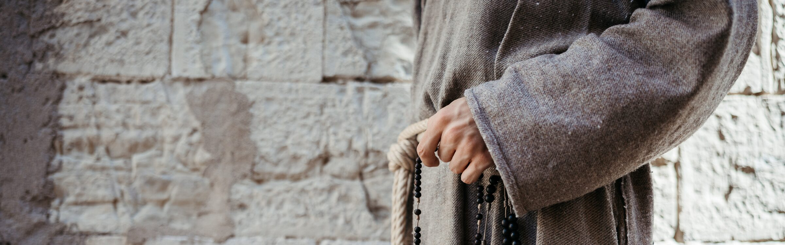
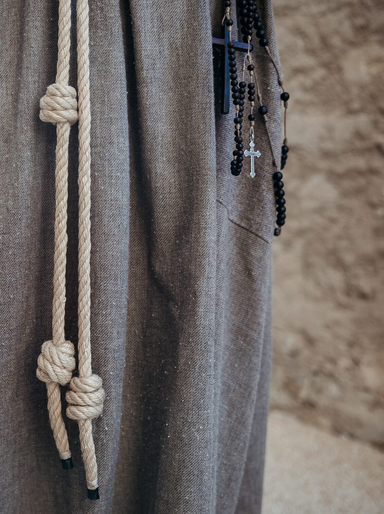
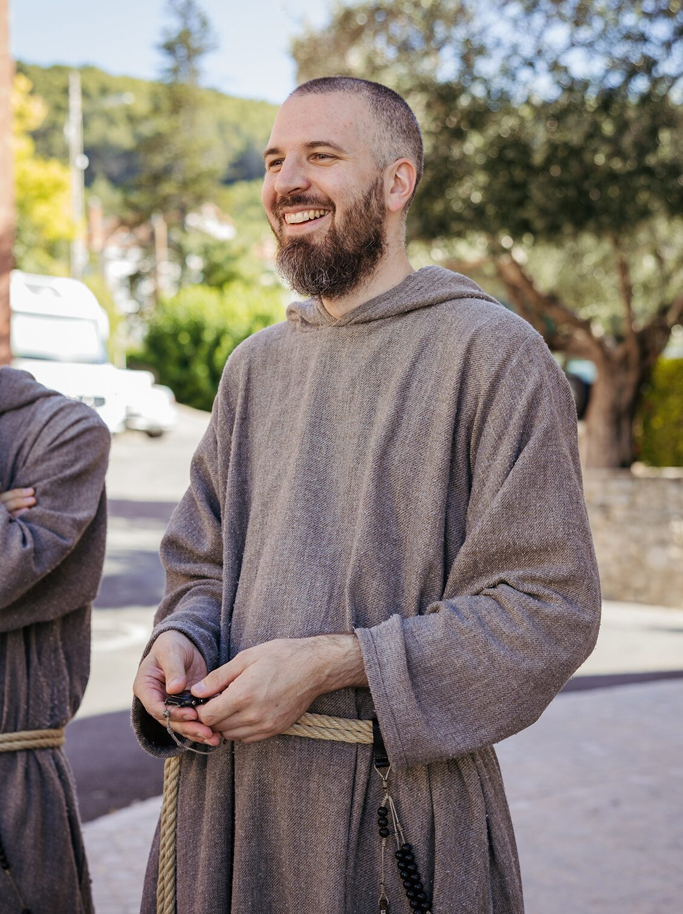
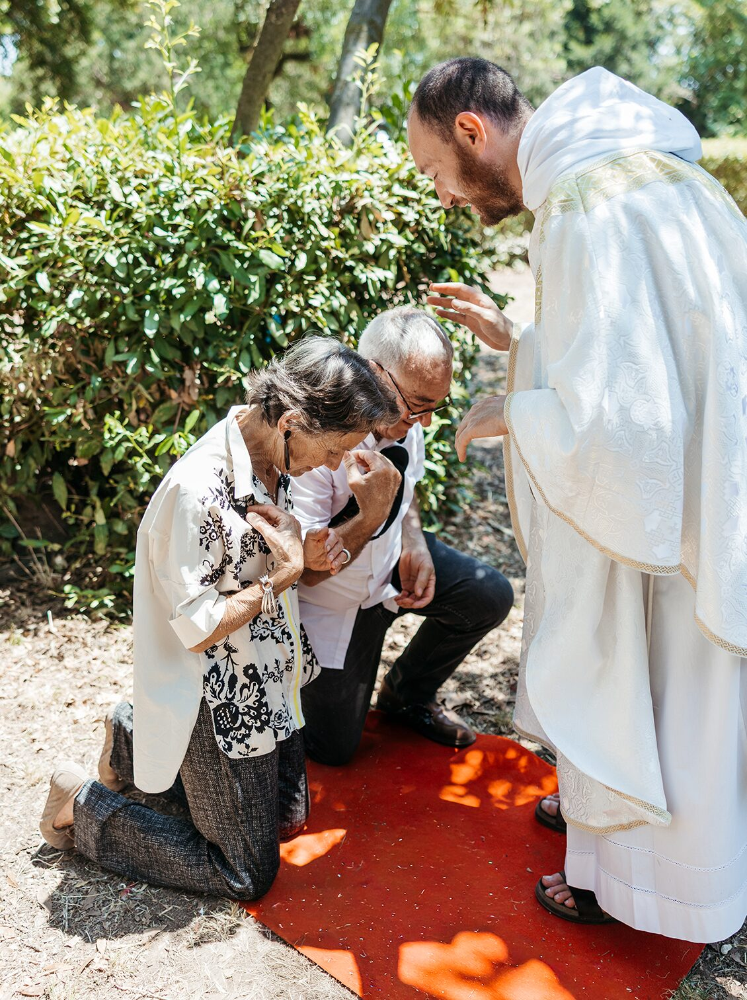

Il nostro cammino
I 6 passi verso la nostra vita religiosa
Diventare un frate francescano della compassione
Il cammino verso la vita religiosa è un percorso graduale: ogni tappa ha il suo tempo.
1. Il primo passo: vieni e vedi
Chi sente un'attrazione interiore verso la spiritualità e la vita dei frati, può fare il primo passo: scrivere una mail o chiamare. Come invita Gesù: «Vieni e vedi» (Gv 1,46).
La porta è sempre aperta: si può restare un giorno, un weekend, un mese o più. C'è anche la possibilità di vivere alcuni giorni di ritiro spirituale, per pregare e fare ordine nei propri pensieri. Chi desidera impegnarsi di più può seguire un periodo chiamato aspirandato.
3. Noviziato
Dopo il postulato si può domandare di proseguire con il noviziato: dodici mesi vissuti in una stessa casa religiosa, sotto la guida di un frate professo solenne. In questi mesi si condivide già tutta la vita dei frati, esercitandosi nella pratica della compassione e della comunione, diventando così un autentico frate francescano della Compassione.


2. Postulato
Dopo questo primo passo, chi sente il desiderio di andare avanti può chiedere di entrare come postulante. La comunità può quindi decidere di far continuare il percorso, che durerà da uno a due anni al massimo. È un tempo prezioso in cui condividere con i frati i ritmi della comunità: pregare insieme la Liturgia delle Ore, vivere la meditazione silenziosa, l'Ora Santa davanti a Gesù Eucaristia e la Santa Messa con maggiore interiorità. Si comincia a sperimentare dall'interno il dono della fraternità francescana, nel lavoro comune e nel servizio ai più bisognosi.
4. Professione semplice
Al termine del noviziato si può domandare di essere ammessi alla professione temporanea di povertà, castità e obbedienza, diventando così pienamente frati. Questi voti vengono rinnovati ogni anno per almeno quattro anni. In questo periodo, pur continuando il cammino di formazione, si partecipa pienamente alla vita della comunità, ricevendo incarichi e responsabilità. Per un maggiore approfondimento della fede, i frati possono, inoltre, seguire corsi presso le università pontificie.
5. Professione perpetua
Dopo almeno quattro anni di professione semplice, si può chiedere di essere ammessi alla professione perpetua. È il dono totale della propria vita a Dio, per sempre.
6. Per i chiamati al sacerdozio
Alcuni frati ricevono anche una chiamata al ministero sacerdotale. La formazione specifica avviene presso il Grand séminaire de l'Immaculée Conception (La Castille), della diocesi di Fréjus-Toulon, dove il frate si reca nei giorni infrasettimanali per le lezioni e lo studio.
Come scrive san Giovanni Paolo II nella sua esortazione apostolica post-sinodale "Vita Consecrata":
Quanto ai sacerdoti che professano i consigli evangelici, l'esperienza stessa dimostra che il Sacramento dell'Ordine trova una particolare fecondità in questa consacrazione, in quanto richiede e favorisce un'unione più stretta con il Signore. Il sacerdote che professa i consigli evangelici è particolarmente favorito in quanto riproduce nella sua vita la pienezza del mistero di Cristo, grazie anche alla spiritualità specifica del suo Istituto e alla dimensione apostolica del suo giusto carisma.


Membri aggregati
Per i laici della comunità
La spiritualità dei frati francescani della Compassione può essere vissuta anche da laici, sposati, chierici o consacrati. Chi sente un'attrazione verso questo carisma può diventare membro aggregato, condividendone la spiritualità nel proprio stato di vita.
I due fondamenti rimangono gli stessi: la compassione e la comunione, appresi dalla devozione alla Madonna Addolorata e dall'impegno a vivere lo spirito di san Francesco, adattato alla propria realtà concreta — in famiglia, nello studio, nel lavoro, nel tempo libero.
La comunità si impegna a offrire tempi di formazione, ritiri e momenti di incontro fraterno, per sostenere il cammino di ciascuno.
Vuoi vedere con i tuoi occhi come viviamo?
Vuoi trascorrere con noi
qualche giorno di ritiro?
Sostieni i frati e il loro apostolato.
Il tuo contributo permetterà alla comunità di vivere concretamente la compassione e la comunione del Vangelo.
SOSTIENICI